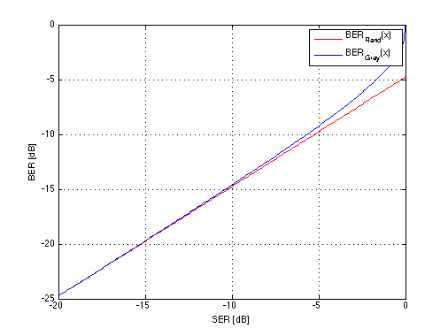

SER-BER with Gray Coding
Copyright 2007 Telecommunications Lab
SER_dB=-20:.1:0; SER_lin=10.^(0.1*SER_dB); M=8; BER=10*log10(1-(1-SER_lin).^(1/(log(M)/log(2)))); BER_gray=10*log10(1/(log(M)/log(2))*SER_lin); plot(SER_dB,BER_gray,'r',SER_dB,BER,'b','LineWidth',1.5); legend('BER_{Rand}(x)','BER_{Gray}(x)'); xlabel('SER [dB]');ylabel('BER [dB]') grid on;